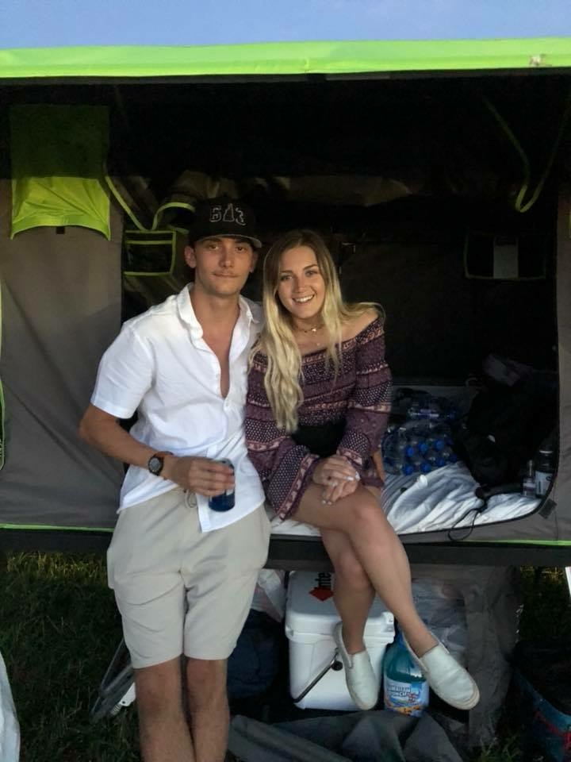

About Me
Born and raised in Hanover, New Hampshire, I've practically lived in this great granite state my entire life. After graduating from the University of New Hampshire, I have been searching for what will be my next chapter in life.
Growing up near rivers, lakes, forests, and mountains - It may not surprise you that I spend a lot of time outdoors. This can be anythng from fishing with my friends to flying across the state in my father's Cessna 180.
Although I have a great love for nature and the outdoors, I also have a passion for tinkering with technology. Cameras, computers, videogames, gadgets, and even vehicles all spark my interests.